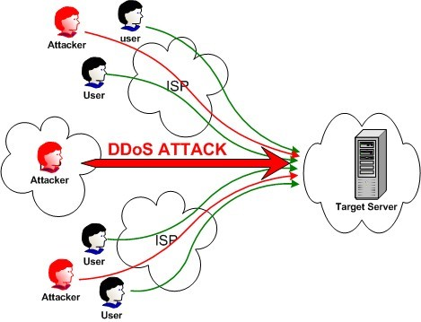
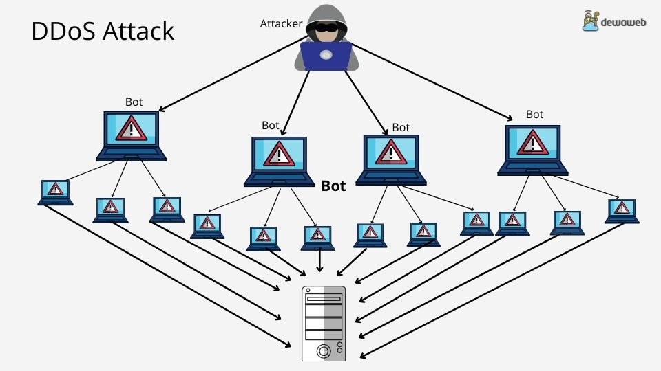

Apa Itu DDoS Attack?
Distributed Denial of Service atau DDoS attack adalah serangan cyber yang dilakukan dengan cara mengirimkan fake traffic pada suatu server atau sistem secara terus menerus, sehingga server tidak mampu mengatur semua traffic dan menyebabkan server atau sistem tersebut down.
Jenis-Jenis DDoS Attack
1. Serangan Volumetrik
Serangan jenis ini memanfaatkan limit dari bandwidth pemilik website dengan menciptakan kemacetan traffic secara konsisten dalam volume yang besar. Sehingga, bandwidth akan kewalahan menghadapi setiap traffic yang masuk dan menyebabkan server lumpuh.
Serangan DDoS volumetrik bekerja dengan cara memanfaatkan botnet (jaringan komputer yang dikendalikan dari jarak jauh) untuk menciptakan traffic besar-besaran. Serangan ini diukur dalam bits per second (bps), dan merupakan serangan yang paling banyak dilakukan dalam DDoS attack.
Contoh Serangan Volumetrik:
UDP (User Data Protocol) Flood
DNS Flood
ICMP (Ping) Flood
2. Serangan Protokol
Jika serangan volumetrik dilakukan dengan menghabiskan bandwidth dari pengguna website, serangan protokol justru dilakukan dengan menghabiskan sumber daya server. Cara yang dilakukan yaitu dengan membanjiri situs web dan sumber daya server dengan membuat permintaan protokol palsu untuk menggunakan sumber daya yang tersedia. Serangan ini diukur dalam packets per second (pps).
Contoh Serangan Protokol:
Smurf DDoS
SYN Flood
Ping of Death
3. Serangan Layer Aplikasi
Seperti namanya, serangan layer aplikasi memanfaatkan kerentanan ‘layer’ di dalam aplikasi seperti Apache, Windows, dan OpenBSD untuk menyerang. Serangan ini berupaya untuk menurunkan server dengan cara membuat sejumlah permintaan yang awalnya tampak ‘normal’ dengan meniru perilaku traffic pengguna.
Karena serangan layer aplikasi hanya menargetkan fitur tertentu dari suatu aplikasi atau situs web, maka seringkali serangan ini luput dari perhatian. Kekuatan dari serangan ini diukur dalam requests per second (rps).
Contoh serangan layer aplikasi:
Slowloris
Advanced Persistent DoS (APDoS)
Zero-day DDoS Attacks
Berikut Ini adalah contoh kejahatan siber yang dapat berlaku untuk serangan DDoS dan ancaman ekstorsionis:
1. Teori Kesempatan (Opportunity Theory):
Menurut teori kesempatan, kejahatan dapat terjadi ketika kesempatan untuk melakukannya hadir. Dalam konteks serangan DDoS, penggunaan teknik dan alat yang mudah ditemukan di internet membuat serangan semacam itu lebih dapat diakses oleh para penyerang. Ancaman ekstorsionis dapat timbul karena keberhasilan sebelumnya dari serangan DDoS atau peluang untuk memanfaatkan kelemahan keamanan.
2. Teori Keuntungan (Profit Motive)
Motivasi keuangan sering menjadi faktor utama di balik serangan DDoS dan ancaman ekstorsionis. Penyerang dapat melihat peluang untuk memeras uang dari target dengan mengancam melancarkan serangan yang merusak atau merusak reputasi.
3. Teori Teknis (Technical Proficiency):
Keahlian teknis diperlukan untuk merancang dan meluncurkan serangan DDoS yang efektif. Pengetahuan tentang cara mengendalikan botnet, memanfaatkan kelemahan keamanan, dan menyembunyikan jejak dapat menjadi faktor yang mendorong seseorang untuk terlibat dalam kejahatan siber.
4. Teori Kecurangan (Fraud Theory)
Ancaman ekstorsionis dapat dianggap sebagai bentuk kecurangan, di mana penyerang berusaha untuk mendapatkan keuntungan finansial dengan cara yang tidak jujur. Ancaman tersebut sering kali menyertakan tindakan merugikan atau potensi kerugian sebagai alat tekanan untuk memaksa korbannya membayar.
5. Teori Kepuasan diri (Self-Satisfaction)
Beberapa serangan DDoS dan ancaman ekstorsionis dapat didorong oleh motivasi psikologis, seperti kepuasan diri atau dorongan untuk merusak. Para penyerang mungkin mendapatkan kepuasan atau kegembiraan dari merusak sistem atau mengekspos kelemahan keamanan.
6. Teori Ideologi atau politik (Ideological or Political Motivation)
Motivasi ideologis atau politis dapat mendorong serangan DDoS yang dilakukan oleh kelompok aktivis atau negara-negara yang memiliki agenda tertentu. Ancaman ekstorsionis dapat juga digunakan sebagai alat untuk mencapai tujuan ideologis atau politis.
7. Teori Kebencian dan Balas Demdam (Hatred and Revenge)
Motivasi pribadi, kebencian, atau balas dendam terhadap suatu organisasi atau individu dapat menjadi pendorong serangan DDoS dan ancaman ekstorsionis.
kejahatan cyber dapat membantu pengembangan strategi keamanan yang lebih efektif untuk melindungi organisasi dan individu dari ancaman serangan DDoS dan ekstorsi. Pemahaman tentang motif dan faktor pendorong serangan dapat membantu dalam peningkatan deteksi, mitigasi, dan respons terhadap serangan keamanan siber.
Cyberlaw Serangan Distributed Denial of Service (DDos)
Indonesia memiliki beberapa undang-undang dan regulasi yang berkaitan dengan serangan cyber, termasuk serangan cyber sabotage dan extortion. Beberapa undang-undang yang relevan meliputi
1. Undang-Undang Nomor 19 Tahun 2016 tentang Perubahan Atas Undang-Undang Nomor 11 Tahun 2008 tentang Informasi dan Transaksi Elektronik (UU ITE): UU ITE memiliki ketentuan yang mencakup berbagai aspek penggunaan teknologi informasi, termasuk kejahatan siber. Pasal-pasal dalam UU ITE dapat digunakan untuk menangani serangan siber, termasuk tindakan cyber sabotage dan extortion.
2. Undang-Undang Nomor 11 Tahun 2008 tentang Informasi dan Transaksi Elektronik (UU ITE): UU ITE yang asli adalah dasar hukum untuk masalah teknologi informasi di Indonesia. Beberapa pasal dalam UU ITE, seperti Pasal 30 tentang pencemaran nama baik, dapat menjadi dasar hukum untuk menangani kasus extortion online.